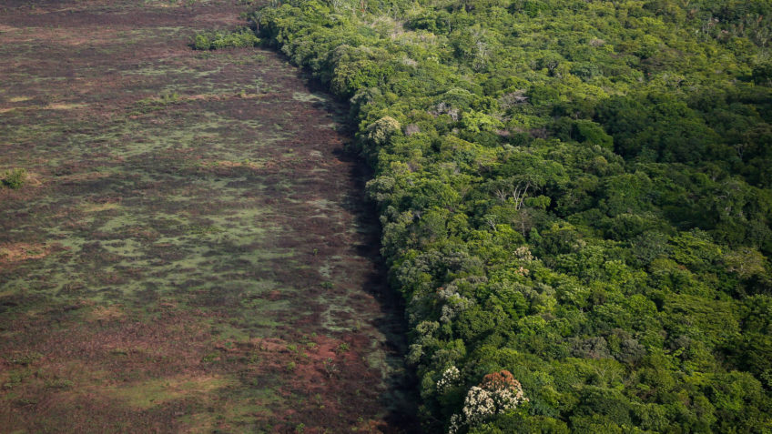

Relatório alarmante revela aumento significativo nos índices de desmatamento em todo o mundo.
Em um relatório recente divulgado hoje, organizações ambientais destacaram uma preocupante tendência de aumento nos índices de desmatamento global. Os dados revelam uma aceleração preocupante na perda de florestas em diferentes regiões do mundo, levantando sérias preocupações sobre os impactos ambientais, climáticos e socioeconômicos dessa destruição.
De acordo com o relatório, nos últimos dois anos, houve um crescimento alarmante de 25% no desmatamento global em comparação com o mesmo período anterior. Esse aumento tem sido impulsionado principalmente por práticas insustentáveis de exploração madeireira, expansão agrícola e atividades ilegais, como a mineração ilegal e o avanço da fronteira agrícola em áreas protegidas.
A Amazônia continua sendo uma das áreas mais afetadas, com um aumento significativo no desmatamento em relação aos anos anteriores. O relatório aponta que as políticas de proteção ambiental enfraquecidas e o relaxamento da fiscalização têm contribuído para a expansão das atividades ilegais na região, resultando em perdas irreparáveis de biodiversidade e liberando grandes quantidades de gases de efeito estufa na atmosfera.
Além disso, outras regiões importantes, como as florestas tropicais da África Central e do Sudeste Asiático, também enfrentam uma crise crescente. A destruição dessas florestas coloca em risco a sobrevivência de espécies endêmicas e afeta negativamente as comunidades locais que dependem dos recursos naturais para sua subsistência.
Os especialistas advertem que o aumento do desmatamento terá consequências devastadoras para o clima global e a estabilidade do ecossistema terrestre. A perda de florestas tropicais, por exemplo, reduz a capacidade de absorção de carbono e aumenta a quantidade de dióxido de carbono na atmosfera, contribuindo para as mudanças climáticas e agravando os eventos climáticos extremos.
Diante dessa crise, as organizações ambientais estão pedindo ação urgente dos governos e da comunidade internacional. É necessário fortalecer as políticas de proteção ambiental, aumentar a fiscalização e promover práticas sustentáveis de uso da terra. Além disso, investimentos em projetos de reflorestamento e restauração de ecossistemas são fundamentais para mitigar os efeitos do desmatamento e preservar a biodiversidade do planeta.
A situação alarmante destacada por este relatório serve como um lembrete urgente de que a proteção das florestas é essencial para garantir um futuro sustentável para as próximas gerações. Ações imediatas e coordenadas são necessárias para reverter essa tendência preocupante e preservar os recursos naturais preciosos que sustentam nossa existência.